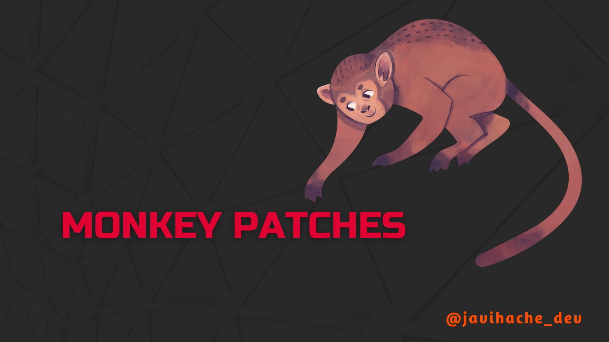

Monkey patches
¿Sabes qué son los parches de mono o monkey patches? 🐒
Probablemente los hayas visto antes o incluso los hayas implementado sin darte cuenta. En este post te voy a aclarar este concepto para introducir hotfixes o parches en tu código.
Un monkey patch es una expresión que se utiliza para aquellos cambios o parches que se hacen durante tiempo de ejecución a funcionalidades que ya han sido implementadas en nuestro código o en librerías o componentes externos.
Esta técnica se utiliza normalmente para modificar una lógica especifica y arreglar algunos casos aislados temporalmente.
Un ejemplo en Javascript podría ser el siguiente:
// Create a class with a defined behaviour
class Monkey {
constructor(name) {
this.name = name;
}
sayMyName() {
console.log(this.name);
}
}
// Create a couple of Monkey instances
let monkeyAndrew = new Monkey("Andrew");
let monkeyRyan = new Monkey("Ryan");
// Monkey Patch the method "sayMyName"
// for the instance monkeyAndrew
monkeyAndrew.sayMyName = () => {
console.log(monkeyAndrew.name + " I");
};
// Call to the method "sayMyName"
monkeyAndrew.sayMyName();
monkeyRyan.sayMyName();
Al ejecutarlo nos devolvería lo siguiente:
Andrew I
Ryan
Como puedes ver, lo que hemos hecho ha sido aplicar un
Monkey patch a la instancia monkeyAndrew de nuestra
clase Monkey. De esta forma el cambio en el comportamiento
de nuestro código ha afectado solamente a un objeto en cuestión y no al
resto.
Los Monkey patches también pueden aplicarse a librerías o componentes externos si el lenguaje o frameworks permite tales modificaciones. Por ejemplo, en Python:
>>> import math
# Print PI
>>> math.pi
3.141592653589793
# Monkey patch PI and print it
>>> math.pi = 3.1
>>> math.pi
3.1
Esta práctica puede ser realmente útil si hay un caso específico en el que nos interesa cambiar el comportamiento de un componente por defecto. A pesar de todo, no es muy recomendable aplicar este tipo de parches. Introducir Monkey patches en tu código crea una lógica que no es la esperaday puede inducir errores o comportamientos extraños que más adelante serán difíciles de identificar.
Puede tener cierto sentido aplicar este tipo de parches en los tests unitarios. Cuando creamos un stub o un mock de un método para obtener datos sin llamar al método real. En cualquier otro caso es posible que haya mejores soluciones, como extender la clase o la función que necesitemos parchear para añadirle la funcionalidad deseada.